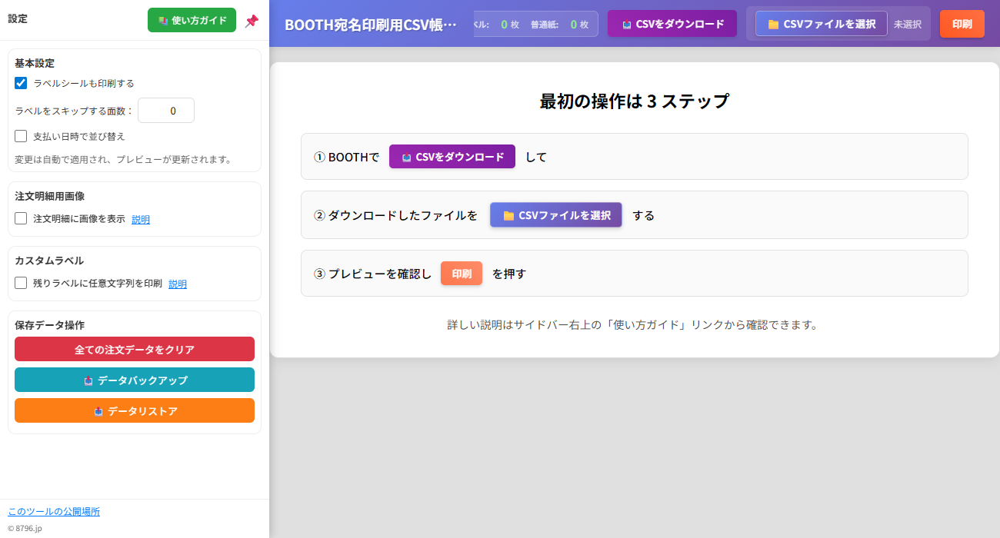
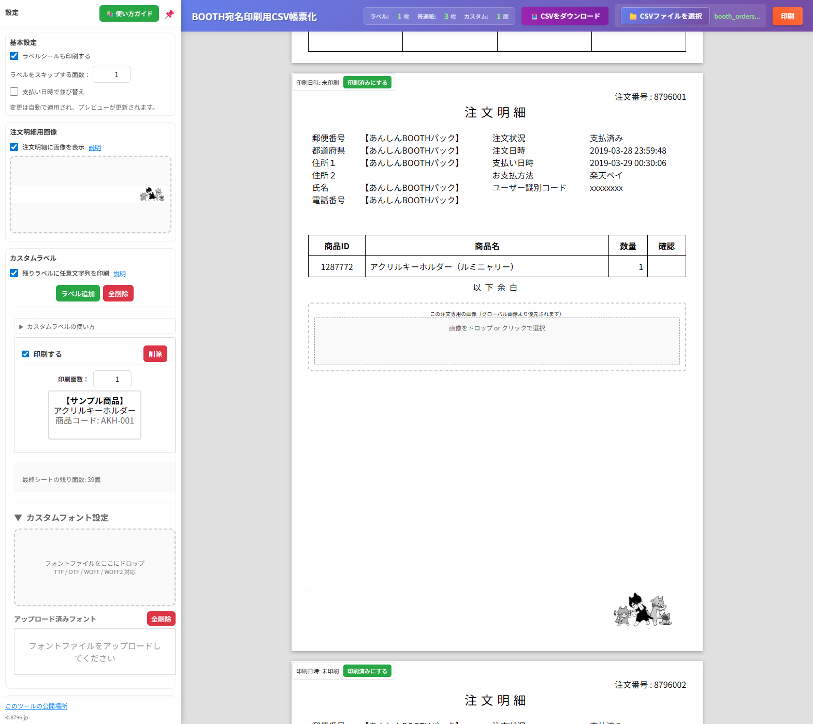
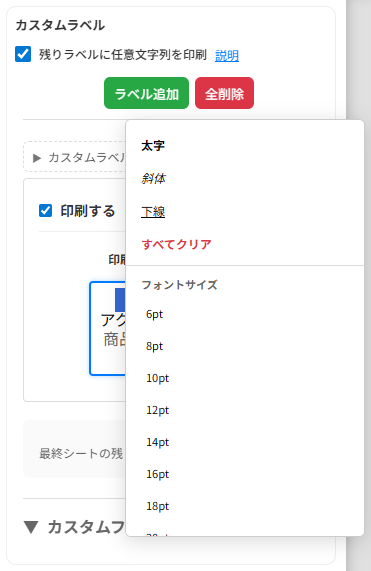

🏷️ BOOTH CSV 使い方ガイド
これは便利だーって思っていただいたおやさしい方はデバッグに協力すると思ってNyanticLabs.からなんか買ってください。これを使って帳票印刷して送ります。
基本情報
想定する使用対象者は誰？
BOOTHで自家通販をしている人で主に「あんしんBOOTHパック」の利用者
なにができるの？
出荷準備のときにあると便利な帳票と「あんしんBOOTHパック」で出荷のときに便利なQRコードをラベルシールに印刷できます。
あと、注文明細に画像を追加して印刷することもできるようになりました。全注文共通の画像と注文ごとの個別画像が設定でき、表示のON/OFF切り替えも可能です。
さらに、カスタムラベル機能により任意の文字列を複数枚印刷することも可能です。
動作環境は？
Windows版のChrome 138で動作確認をしています。
最近のChromeなら動くと思いますが仕様が変わると動かない機能もあるかもしれません。
スマートフォンのChromeだとラベルシール印刷がズレると思うのでたぶん駄目です。
JavaScriptでどうにかしてるので別途サーバーなどは必要ありませんし外部に情報を送ることもありません。
基本的な使い方
- ここからzipファイルをダウンロードして展開します。
boothcsv.htmlを Chrome から開きます。- 注文明細に画像を印刷したい場合は、まず「注文明細に画像を表示」にチェックを入れます。
- 全ての注文に同じ画像を表示したい場合は、「注文明細の余白に表示したい画像をここにドロップ or クリックでファイルを選択」のところに画像をドラッグ&ドロップするかクリックしてファイル選択します。
- カスタムラベルを印刷したい場合は、「残りラベルに任意文字列を印刷」にチェックを入れて、印刷したい文字列と枚数を設定します。複数のカスタムラベルを設定したい場合は「ラベル追加」ボタンで項目を追加できます。
- ファイルを選択ボタンを押してBOOTHの注文一覧からダウンロードした宛名印刷用CSVを選択します。
- 支払い日時で並び替えたい場合はチェックボックスにチェックを入れます。BOOTHからダウンロードしたCSVは新しい注文が上に来るので、支払いの古い順に並べ替えたい場合に便利です。
- 実行ボタンを押すと印刷に必要な枚数が表示されます。
- 特定の注文だけ別の画像を表示したい場合は、その注文明細の「この注文専用の画像（グローバル画像より優先されます）」のところに画像をドロップします。個別画像はグローバル画像より優先されるので、設定すればその注文だけ別の画像が表示されます。
- 「注文明細に画像を表示」のチェックを外すと、設定した画像は保持されたまま表示だけを切り替えできます。リアルタイムで反映されるので印刷時の調整に便利です。
- プリンターに用紙をセットして印刷します。
ラベルシールも印刷したい
これね、ヤマトの営業所持ち込みであんしんBOOTHパック使うときにはすげえ便利なんですよ。PUDOステーションに放り込むときにもめっちゃ便利です。慣れると1出荷30秒ぐらいでできます。

- BOOTHの注文詳細であんしんBOOTHパックのQRコードを作成して、表示されたQRコードの画像を右クリックでコピーしてから該当の注文番号のラベルの「Paste QR image here!」を右クリックして貼り付けを選ぶとQRコードが表示されて自動的に匿名配送の受付番号とパスワードが表示されます。自動です。オートマチック！！

- なお間違えて貼り付けたときはQRコードをクリックすると再度貼り付けできるようになります。
- 印刷したラベルシールを出荷する箱に貼り付けておけば出荷時にネコピットを箱に貼ったQRコードにかざす→その箱に貼る送り状が印刷されるという流れになるので送り間違いは発生しません。万が一QRコードの読み込みが上手く行かなかった場合でもラベルシールに印刷されている受付番号とパスワードを入力すれば送り状が出力できるので安心です。
画像機能について

注文明細に画像を追加できる機能があります。
基本的な使い方
- 画像表示の有効化: まず「注文明細に画像を表示」にチェックを入れてください。
- 画像設定: 以下の2つの方法で画像を設定できます：
グローバル画像
全ての注文明細に同じ画像を表示したい場合。「注文明細の余白に表示したい画像をここにドロップ or クリックでファイルを選択」の部分に画像をドロップするか選択します。
個別画像
特定の注文だけ別の画像を表示したい場合。実行後に表示される各注文明細の「この注文専用の画像」部分に画像をドロップします。
- 表示切り替え: 「注文明細に画像を表示」のチェックを外すと、設定した画像は保持されたまま表示だけをリアルタイムで切り替えできます。印刷時の調整に便利です。
対応画像形式: JPEG、PNG、SVG（.jpg、.jpeg、.png、.svg）
個別画像はグローバル画像より優先されます。つまり個別画像を設定した注文はその画像が、設定しなかった注文はグローバル画像が表示されます。
画像は全部localStorageに保存されるので、ページを再読み込みしても残ってます。不要になったらクリアボタンで削除できます：
- 全てのQR画像をクリア: QRコード関連の画像だけ削除
- 全ての注文画像をクリア: グローバル画像と全ての個別画像を削除
画像をクリックすると削除されるので、間違えて設定した場合も簡単にリセットできます。印刷時は画像ドロップゾーンは表示されないので邪魔になりません。
カスタムラベル機能について
余った44面シールに商品名や管理用文字列を印刷できる機能です。商品管理や在庫整理の際に便利です。
- 有効化: 「残りラベルに任意文字列を印刷」のチェックボックスをオンにします。
- 文字列入力: ラベルに印刷したい文字列を入力します。商品名、品番、管理コードなど任意のテキストが可能です。太字や斜体、フォントサイズの変更もできます。
- 枚数設定: 印刷したい枚数を指定します。
- 複数ラベル: 「ラベル追加」ボタンで複数のカスタムラベルを設定できます。
- 削除: 不要なラベルは「削除」ボタンで削除できます（最低1つは必要）。
文字列の編集方法

- テキストエリア内で普通に文字を入力
- 改行: Enterキー
- 書式設定: 右クリックでコンテキストメニューを表示
- 太字、斜体、下線の切り替え
- フォントサイズの変更（6pt〜28pt）
- キーボードショートカット:
- Ctrl+B: 太字の切り替え
- Ctrl+I: 斜体の切り替え
- Ctrl+U: 下線の切り替え
設定した内容はブラウザに保存されるので、ページを再読み込みしても残ります。
デバッグ機能
開発やトラブルシューティング用にデバッグログ機能があります。
- 有効化: URLに
?debug=1を付けてアクセス（例:boothcsv.html?debug=1） - 無効化: 通常通りアクセス（デバッグログは出力されません）
デバッグモードでは、カスタムラベルの追加やQRコード処理などの詳細な動作がコンソールに出力されます。
BOOTHで売れてないけど試したい
- sampleにcsvファイルとQRコードのpngファイルがあるので試せます。
- 参考までに手元にあるpngファイルは直接該当箇所にドラッグアンドドロップすれば貼り付けられます。画像機能も同じようにドラッグ&ドロップで試せます。
- 当然ですが、サンプルのデータはダミーの数字が入っているので出荷では使えません。
使ってる仕組み
裏側の見どころ
- こだわりの素JavaScriptでHTML5のtemplateタグを使ってます。最近はquerySelectorのおかげでjQueryなしでも要素の選択が割と簡単にできるようになったみたいです。
- Paper CSS強い。templateと合わせると通常の業務で使う帳票はだいたい表現できるぞ！サーバーでPDF作ってダウンロードさせて印刷とかしなくてもいいし、Chrome上での見た目がいきなり印刷プレビュー風で謎の安心感があります。
- BOOTHからダウンロードするCSVのヘッダが日本語なので、classとかも全力で日本語です。可読性高い！
- localStorageに画像とかQRコードの情報を保存してるので、ブラウザ閉じても設定が残って便利です。でもlocalStorageの容量制限があるので画像をバンバン保存しすぎると容量オーバーになるかもしれません。そうなったらクリアボタンで削除してください。